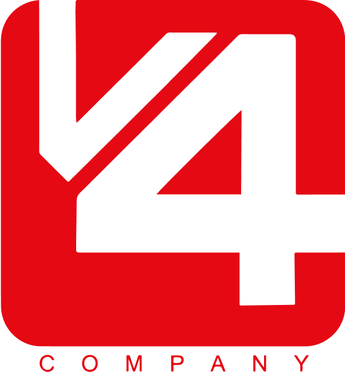
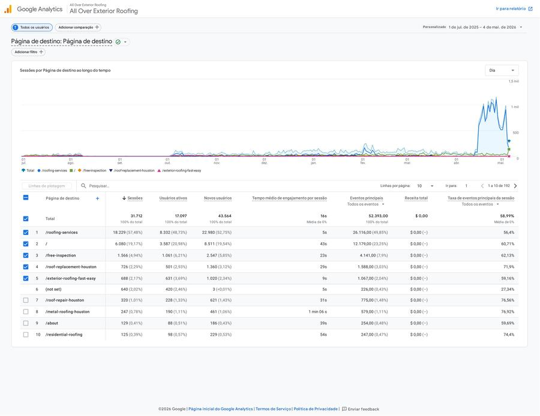
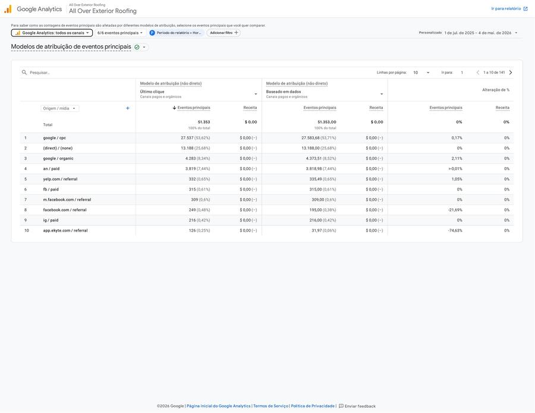
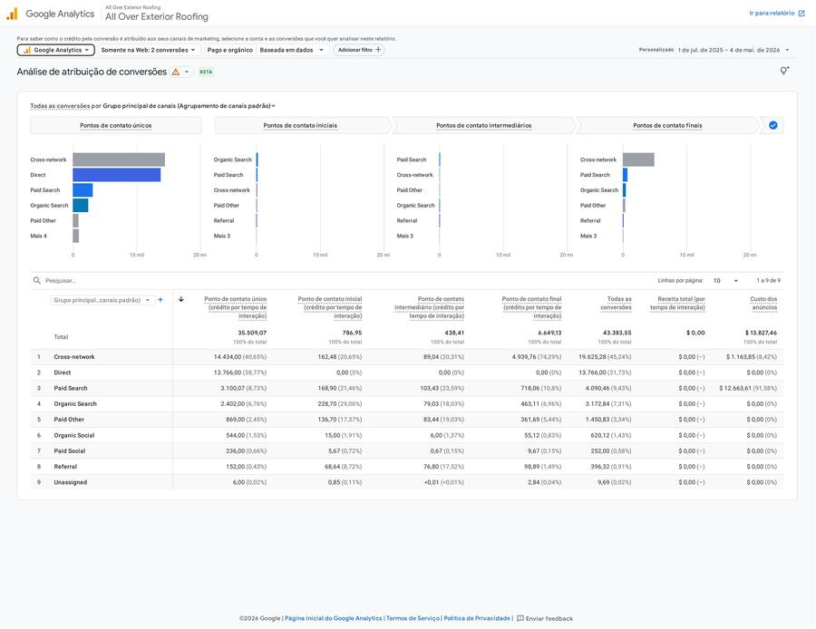
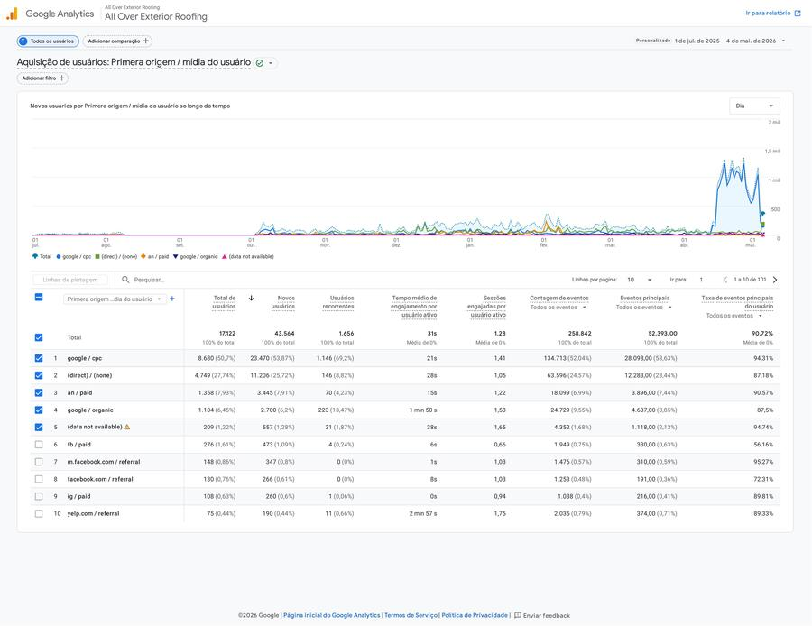
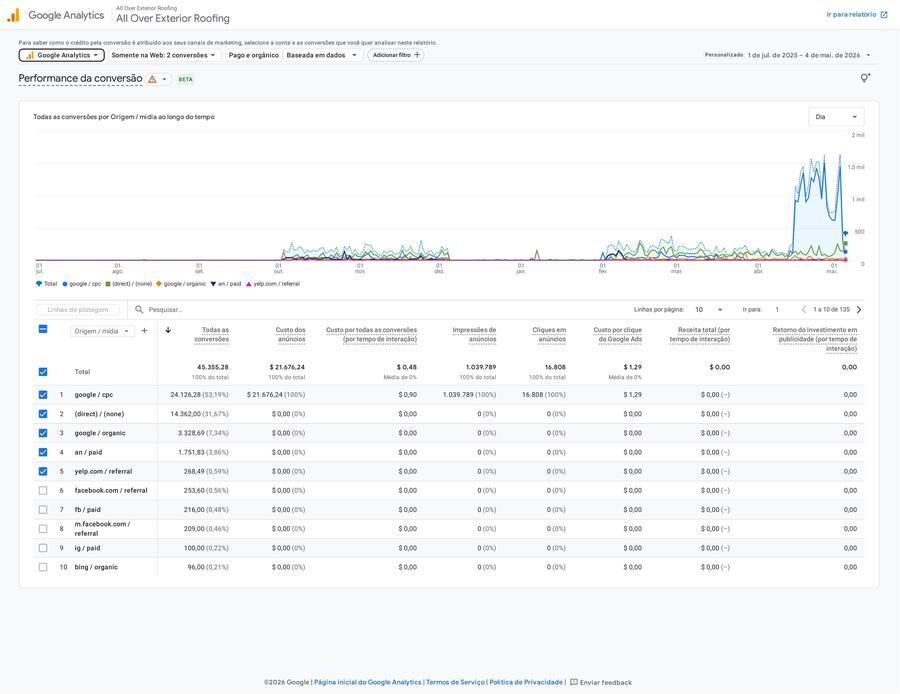

All Over Exterior RoofingAll Over investiu pesado em Google Ads e construiu uma presença digital forte. Os dados mostram que o motor segue funcionando — mas o mercado de roofing em Houston mudou. Concorrência mais agressiva, CPCs sazonais que disparam na temporada de tempestades e um ecossistema de canais ainda inexplorado. A pergunta certa não é "Google ainda funciona?". É: "qual é a composição de mídia ideal para 2026?"
Houston concentra 305 empresas de roofing — 5,4% de todo o estado. Cada uma disputando as mesmas keywords na temporada de tempestades.
+40-80% CPC na temporadaO CPC real do setor de roofing é o mais alto de todos os home services — $10,70 contra $7,85 da média geral. Em Houston, na temporada de furacões, chega a $52-$84 por clique.
$228 CPL médio nationwidePesquisa 2025 da Roofing Contractor mostra que 50% dos homeowners encontram empreiteiras via busca online. Outros 11% já usam IA (ChatGPT, Copilot, Perplexity). O consumidor de roofing migrou pro digital — e não volta.
Ticket médio residencial: $13.400Roofing tem o maior CPL dos home services ($228 nacional, $88-$165 em Houston) porque o ticket justifica o investimento. Um lead de roofing que fecha um telhado residencial de $13.400 tem um ROA potencial de 80:1. O problema não é o custo do lead — é deixar leads na mesa por não estar onde o consumidor está. E o consumidor de Houston está cada vez mais fragmentado entre canais.
11 meses de dados reais da All Over, combinando GA4, GHL e benchmarks de mercado. Cada canal tem um papel na jornada — entender o peso de cada um é o primeiro passo para desenhar a composição ideal.
53,6% dos eventos chave vêm do Google Ads no GA4. Mas só 18,8% dos leads chegam com GCLID no GHL. Os outros 76% aparecem como "Direct/Orgânico" — invisíveis. O problema não é o canal. É o rastreio.

O GA4 mostra que Google Ads gera 53,6% das conversões em qualquer modelo de atribuição. O CPC de $2,60 está abaixo da média nacional ($10,70). O motor funciona. O que está quebrado é o elo entre o clique no anúncio e o lead no CRM — 76% dos leads perdem o GCLID porque o formulário de conversão está numa página diferente da que recebe o tráfego pago. Consertar isso é a ação de maior retorno imediato.


Os dados mostram que a All Over opera essencialmente com 2 canais pagos (Google Search + Cross-network) em um mercado com pelo menos 7 canais viáveis para roofing. As maiores oportunidades estão em canais onde a concorrência ainda não chegou — e onde a audiência da All Over já está.
Além do Google Search e do Cross-network, 6 outras plataformas já entregam tráfego e conversões para a All Over — sem investimento dedicado, sem campanhas estruturadas, sem otimização. Apple Search Ads, Yelp e Bing já provaram que a audiência existe e se engaja. O que falta é a estratégia para capturar esse potencial.

Apple Search Ads aparece com $0 de ad spend no GA4 porque a Apple não reporta custo via integração padrão. A All Over pode estar pagando por 1.358 usuários sem conseguir medir o ROI. Com campanhas estruturadas no Apple Ads Manager, esse canal pode se tornar o 2º maior motor de leads da operação.
Só 75 usuários, mas 2min57s de engajamento vs 21s do Google Search. Quem chega via Yelp já está decidido — só precisa de confiança. Yelp Ads pode escalar com CPL de $40-$80 e time response rápido. É o canal de maior eficiência qualitativa de toda a base.
O Bing já entrega 96 conversões sem um centavo investido. Isso é a validação mais forte possível: o público do Bing já está procurando roofing em Houston e convertendo organicamente. Com campanhas importadas do Google Ads (mesmas keywords, mesmas páginas), o potencial comprovado é de +15-25% de leads totais a um CPL 30-40% menor.

Campanhas pagas mínimas e sem otimização. Referral orgânico já entrega 501 eventos chave sem custo — sinal de que a audiência Meta existe, se engaja e compartilha. Com campanhas de lead gen direto (CPL potencial $20-$80) + nurturing via email, o ecossistema Meta pode virar o 2º maior canal em volume com investimento moderado.
Apple Ads, Yelp, Bing, Facebook e Instagram já entregam 12,23% dos usuários da All Over — sem campanhas dedicadas, sem otimização, sem investimento coordenado. Com a composição de mídia certa, esse número pode triplicar em 6 meses. A pergunta não é "se" funcionam. É: quanto investir para capturar a demanda que já existe?
Enquanto todo mundo está no Google lutando por CPCs que dobram na temporada de tempestades, o Bing (Microsoft Ads) oferece o mesmo público — mais velho, mais rico, mais intenção — por 30-50% menos por clique. E com uma vantagem que o Google não tem: compliance integrado ao ecossistema Microsoft.
CPC médio de roofing no Bing: $5-$7 vs $10,70 no Google. Para a All Over, que paga $2,60 no Google (abaixo da média), o Bing pode entregar CPC de $1,30-$1,80 com importação direta das campanhas atuais.
CPL estimado: $60-$13033% dos usuários do Bing têm renda familiar acima de $100K. A faixa etária dominante é 35-65 anos — exatamente quem contrata serviços de telhado. 70% das buscas são em desktop (vs 40% no Google), sinal de pesquisa de alta intenção.
+20% ticket médio vs GoogleO Microsoft Advertising opera com Consent Mode avançado e está alinhado com as práticas de privacidade GDPR. Para clientes que valorizam compliance e transparência — como empresas que atendem o ecossistema Microsoft 365 — o Bing é o caminho natural.
Copilot integrado desde 2025Empresas que usam Microsoft 365, Teams, Outlook e LinkedIn têm seus funcionários expostos ao Bing como mecanismo padrão do Edge/Windows. Funcionários de grandes corporações em Houston (setor de energia, saúde, educação) pesquisam serviços domésticos no Bing durante o expediente — e encontram muito menos concorrência do que no Google. A All Over pode ser uma das primeiras roofing companies em Houston a ocupar esse espaço.
| Métrica | Google Ads | Microsoft Ads |
|---|---|---|
| CPC médio home services | $7,85 | $3,50-$5,00 |
| CPC roofing (est.) | $10,70 | $5,00-$7,00 |
| Incremento de leads | — | +15-25% sobre Google |
| Renda familiar >$100K | ~25% | 33% |
| Desktop vs Mobile | 40/60 | 70/30 |
| Público 35-65 anos | Médio | Alta concentração |
| Compliance/privacy | Standard | Advanced Consent Mode |
Iniciar com 15-20% do orçamento atual de Search (~$300-$500/mês) em campanhas importadas do Google. Meta: 15-25% de leads incrementais a 40% menos CPL. Escalar ou cortar com base em dados reais de 60 dias.
O Microsoft Ads é a única plataforma de search que permite segmentação por cargo, indústria e empresa via LinkedIn. Isso significa que a All Over pode, por exemplo, segmentar "proprietários de imóveis em Houston" ou "gestores de facilities de empresas de energia" — algo impossível no Google.
Além de Google e Microsoft, existem pelo menos 5 canais adicionais que a All Over deveria considerar. Cada um atende a um momento diferente da jornada do consumidor — da descoberta à decisão final.
O LSA é o canal de maior intenção para roofing: CPL de $58-$98 em Houston, e o lead já chega pré-qualificado. O problema da All Over não é o LSA em si — é o tempo de resposta. LSA prioriza quem responde em menos de 2h. Acima disso, o Google entrega o lead para o concorrente.
Estruturar resposta automatizada + alerta mobile para leads LSA. Cada hora de atraso custa leads que poderiam estar fechando com CPL de $65.
O GBP é o canal de maior ROI do roofing: CPL de $15-$50 e conversão de 25-35%. Os 24 artigos SEO de maio de 2026 precisam de 90-120 dias para maturar, mas vão gerar tráfego orgânico crescente. Com 305 roofers em Houston, o GBP e o SEO são os diferenciais competitivos duradouros.
Cada cenário abaixo parte do orçamento atual da All Over e propõe uma redistribuição. Clique nas abas para explorar cada estratégia.
+15-20% leads via Bing. Estabilização do CPA. Sem crescimento expressivo, mas com proteção contra oscilações de CPC sazonal. CPL estimado: $95-$130.
| Canal | % | Valor | Função |
|---|---|---|---|
| Google Search | 50% | $1.500 | Âncora — intenção de busca |
| Microsoft Ads (Bing) | 15% | $450 | Incremental — CPC mais baixo |
| Cross-network | 15% | $450 | Awareness + remarketing |
| LSA | 10% | $300 | Alta intenção local |
| Facebook/Instagram | 5% | $150 | Baixo CPL, nurturing |
| YouTube (Vídeo) | 5% | $150 | Conteúdo + confiança |
+30-40% leads totais. Bing delivera 15-20% dos leads a CPL 40% menor. CPL blendado cai de $125 para $90-110. Dependência de Google reduzida de 80% para 50%. Base para escalar.
| Canal | % | Valor | Função |
|---|---|---|---|
| Google Search | 40% | $2.000 | Âncora — manter campanhas de alta intenção |
| Microsoft Ads | 20% | $1.000 | Escalar — CPL mais baixo, intenção alta |
| Cross-network | 15% | $750 | Remarketing + Discovery campaigns |
| LSA | 10% | $500 | Time Response resolvido = leads frescos |
| Facebook/Instagram | 8% | $400 | Escalar — CPL de $30-60 |
| Geofencing | 5% | $250 | Segmentação por CEP (bairros-alvo) |
| YouTube | 2% | $100 | Conteúdo de autoridade |
+70-100% leads totais. Market share em Houston capturado sazonalmente (pré-tempestades). CPL blendado: $75-$95. Bing + LSA viram segundo e terceiro canais em volume.
| Canal | % | Valor | Função |
|---|---|---|---|
| Google Search | 30% | $2.250 | Alta intenção + LSA |
| Microsoft Ads | 20% | $1.500 | Segundo search, CPL 40% menor |
| Cross-network | 18% | $1.350 | Discovery + Remarketing + YouTube |
| Facebook/Instagram | 12% | $900 | Nurturing + ofertas sazonais |
| LSA | 10% | $750 | Lead quente local |
| Geofencing | 5% | $375 | Bairros-alvo (casas 20+ anos) |
| Email + Automação | 3% | $225 | Nurturing + referral program |
| Programático (Display) | 2% | $150 | Segmentação contextual |
+150% leads. Bing vira 15-20% do volume total. CPL blendado de $65-$85. Funil de nutrição recupera 10-15% dos leads não convertidos. Programa de indicações ativado via email. Presença dominante em Houston.
+300% leads anuais. CPL blendado de $55-$75. Receita estimada: 8-12x o investimento em mídia. All Over se posiciona como marca digital dominante no mercado de Houston — capturando não só busca ativa, mas presença em AI Search onde 11% dos consumidores já pesquisam.
Como o orçamento se redistribui entre canais em cada cenário. Quanto maior o investimento, menor a dependência do Google Search — e maior a diversificação.
A mágica não está em nenhum canal isolado — está em como eles se complementam. Um lead descobre a All Over pelo YouTube, pesquisa no Bing, lê um artigo de blog, vê um remarketing no Facebook e converte pelo LSA. Cada canal empurra o lead para o próximo estágio.
Benchmarks do setor vs performance real da All Over. Quanto menor o CPL, maior a eficiência — desde que o lead tenha qualidade para fechar.
| Canal | CPL Nacional | CPL Houston | CPL All Over* | Conversão | Veredito |
|---|---|---|---|---|---|
| Google Business Profile | $15-50 | $15-50 | Não medido | 25-35% | ⭐⭐⭐⭐⭐ |
| Referral / Indicações | $25-75 | $25-75 | Não medido | 25-40% | ⭐⭐⭐⭐⭐ |
| SEO (Orgânico) | $100-300 | $80-200 | Em maturação | 8-12% | ⭐⭐⭐⭐ |
| LSA (Local Services) | $58-98 | $58-98 | Comprometido | 30-40% | ⭐⭐⭐ (Time Response) |
| Microsoft Ads (Bing) | $50-130 | $40-100 | Não testado | 5-8% | ⭐⭐⭐⭐ (potencial) |
| Facebook / Instagram | $20-80 | $20-60 | Sub-testado | 10-20% | ⭐⭐⭐ (potencial) |
| Google Search Atual | $125-228 | $88-165 | ~$125 | 5,6% (sessão) | ⭐⭐⭐⭐ (âncora) |
Canais com CPL baixo e conversão alta (GBP, LSA, Referral) devem ser prioridade imediata. Canais com CPL baixo e conversão média (Bing, Facebook) são a aposta de crescimento. Canais com CPL alto e conversão alta (Google Search, SEO maduro) são a âncora. A All Over hoje depende exclusivamente de uma única âncora — o Google Search — quando poderia estar operando com 3-4 âncoras simultâneas.
A All Over não precisa escolher entre Google ou Bing. Precisa de um sistema de canais que trabalhem juntos, cada um no seu papel, com métricas claras e orçamento dinâmico.
Começar pelo Cenário Equilibrado (~$3.000/mês) com viés para o Ofensivo (~$5.000/mês) após 60 dias de dados. A composição ideal para Houston em 2026 é: Google Search (40%) + Microsoft Ads (20%) + Cross-network (15%) + LSA (10%) + Facebook (8%) + Geofencing (5%) + YouTube (2%). Microsoft Ads é a recomendação estratégica nº 1 — por compliance, por custo e por ser o canal onde a concorrência ainda não está.